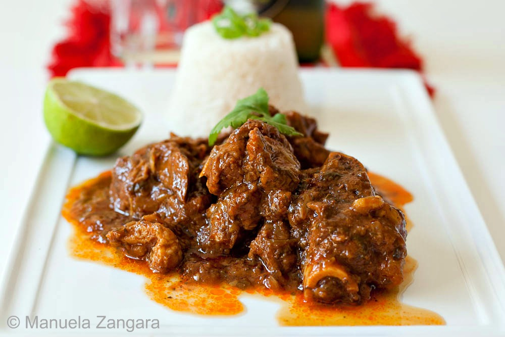

This is a very popular hispanic dish named "Chivo Guisado" which translates to
a curried goat meat dish!!
Goat meat has a stronger, gamier flavor than beef or pork, so it may be an acquired taste for some people and goes very well with white rice and some dominican beans to compliment!
It is a staple in many dominican households for a long time due to its rich and unique flavor thats definately a must try!
Ingredients
- 2 limes, or 1 bitter orange cut into halves
- 4 pound bone-in goat meat, [1.8 kg] --or 2 lb [0.9 kg] of boneless meat-- cut into small pieces
- 1 red onion, diced
- 1½ teaspoons oregano (dry, ground)
- 2 tablespoon mashed garlic
- 1½ teaspoons salt, (or more, to taste)
- 3 tablespoon vegetable oil
- 2 cubanela (cubanelle pepper), chopped
- 4 plum tomato, diced
- 1 cup tomato sauce
- 1 cup red wine, or a ¼ cup of rum (optional, see notes)
- ½ scotch bonnet pepper, (or 2 habaneros) finely chopped
- Parsley, or cilantro to garnish
Steps
- Rinsing meat: Add the juice of the limes (or bitter oranges on the meat). Stir to coat all the meat. Let it rest for 15 mins.
- Once the 15 minutes have passed, take the meat out of the liquids, and discard the liquid.
- Seasoning meat: Add the onion, oregano, garlic, and a teaspoon of salt. Stir to combine.
- Marinate covered in the fridge for an hour, overnight is better.
- Browning meat: Heat the oil in a deep-bottomed pot over high heat. Add just the meat to the oil (set aside onions and juices released by the meat in the marinade).
- The meat will release some liquid when heated, cook and stir until all the liquid has evaporated, and the meat is browned.
- Simmering: Add 2 tablespoons of water, lower heat to medium-low, stir and cover.
- Every 5 minutes add water and stir, cover again and repeat until the meat is very tender (30 to 60 minutes, depending on the quality of the meat.
- Adding vegetables: Once the meat is tender add the onions (and meat juices), tomato, and cubanela.
- Cover and simmer until the vegetables are cooked-through (5 minutes).
- Making sauce: Pour in the tomato sauce, stir to combine.
- Add wine and 1½ cups of water. Simmer and reduce to a thick sauce.
- Season with salt to taste if you find it necessary and simmer until liquid is reduced to a thin sauce.
- Garnish: Decorate with parsley or cilantro leaves.